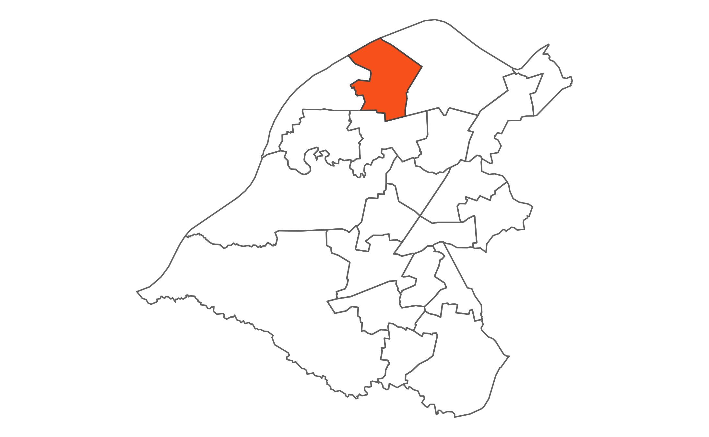

 Davyhulme East is in the north of Trafford and is bounded to the north by the Manchester Ship Canal and the Bridgewater Canal. The ward is home to the Trafford Centre, separated from the residential areas by the M60, the historical Barton Aqueduct, which crosses the Manchester Ship Canal and Barton Swing Bridge.